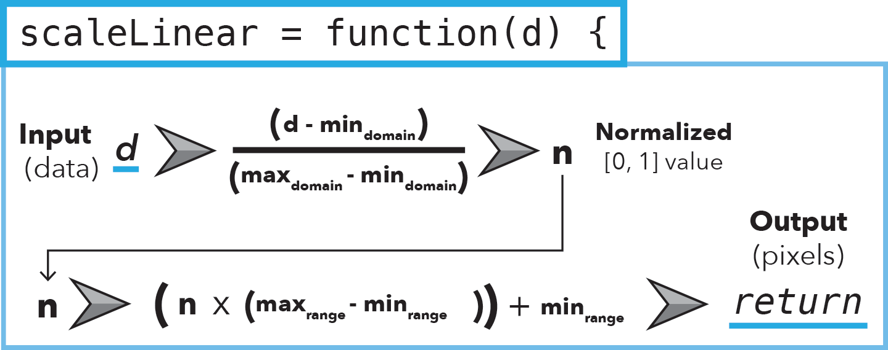

D3 is a library that makes it easy to create and manipulate page elements. It's not restricted to SVG elements, but that's what we'll usually use it for. We'll start by using d3 to select DOM elements, create new elements, and modify the content and appearance of elements.
You can find a bunch of D3 examples here and access D3's online API reference.
Today we will be looking at d3 scales. Here is a helpful diagram for how scaleLinear works:
